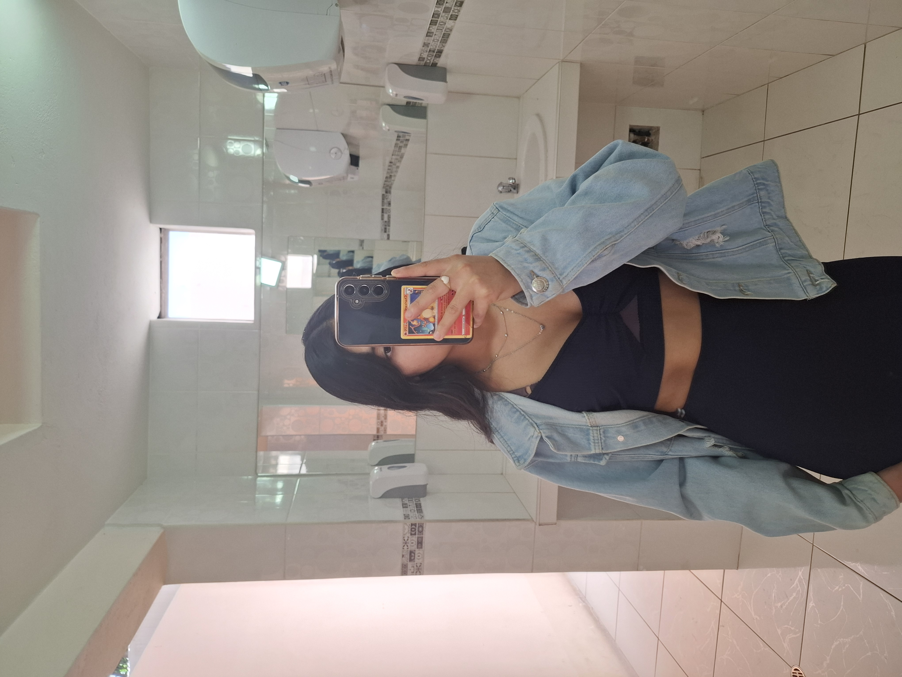

01 · Un momento divertido
Las cosas más simples también se vuelven recuerdos.
Porque contigo cada momento aunque sea simple siempre fue divertido para mi 💙.
Hay algo que preparé especialmente para ti. No es algo enorme, pero sí está hecho con muchísimo cariño.
Hoy es un día especial porque hace algunos años llegó al mundo una persona que terminaría siendo muy importante para mí.
Y aunque la vida cambie y las cosas también cambien, quería regalarte un pequeño espacio lleno de recuerdos bonitos para que hoy puedas sonreír.
Porque contigo cada momento aunque sea simple siempre fue divertido para mi 💙.

Hay momentos que parecen pequeños, pero cuando los recuerdo me doy cuenta de lo bonito que fue compartirlos contigo💖.

Quizás con el tiempo cambien muchas cosas, pero eso no hace que los momentos bonitos que vivimos dejen de ser importantes y es mas se vuelven aun mas importantes para mi 💕.

Yosi, espero que nunca olvides lo bonita que eres, no solamente por fuera, sino por todo lo que llevas dentro.
Hoy mereces sentirte querida, valorada y especial. Porque lo eres.

Gracias por cada risa, cada conversación, cada salida, cada abrazo y cada pequeño momento que terminó convirtiéndose en un recuerdo para mí.
Yos, hoy quería aprovechar tu cumpleaños para decirte algo que quizás no siempre supe expresar de la mejor manera y gracias por dejarme pasar un año mas de tu vida junto a ti.
Eres una persona muy importante para mí y compartimos momentos que voy a recordar con muchísimo cariño. Hubo risas, planes, conversaciones, detalles, días buenos y también momentos difíciles. Todo eso forma parte de una historia que significó mucho para mí.
No quiero que este mensaje sea una forma de pedirte nada ni de hacerte sentir presión. Solamente quería que, en tu cumpleaños, recibieras un pequeño recordatorio de que hubo alguien que se alegró muchísimo de conocerte y que genuinamente deseó verte feliz.
Deseo que este nuevo año de tu vida venga lleno de tranquilidad, personas que te quieran bien, sueños que puedas cumplir y muchísimas razones para sonreír, no te desvies de tu camino , no tomes demasiado seguido, mas que todo porque te hace mal, recuerda que amigos no son esas personas que solo quieren llevarte a tomar cada rato.
Se que llegaran nuevas personas a tu vida, y como dices talvez en algun momento decidas emparejarte con una de ellas yo no puedo evitar eso, en este momento me duele aun demasiado saber que ya no stamos como pareja aun cuando yo tengo amor hacia ti, me gustaria recuperarlo, pero se que tu ya no sientes lo mismo, y eso me duele demasiado, pero no puedo obligarte a sentir algo que ya no sientes, solo quiero que sepas que yo siempre te voy a querer y que siempre voy a desear lo mejor para ti.
Habran dias dificiles como el del dia viernes que me contaste hasta ponerte a llorar, pero se que tu lograras tus metas porque eres una guerrera, alguien que no se rinde con nada, se que puedes sola, pero no estas sola me tienes a mi si lo necesitas, TE AMO 💖, te admiro demasiado mi amor, NO TE RINDAS.
Y sobre todo, deseo que nunca dejes de ser tú. Esa Yosi que tiene sus ocurrencias, sus formas de hacer reír y esa manera tan suya de hacer especiales ciertos momentos.
Feliz vuelta al sol Numero 22 amorcito 😘
Gracias por todos los recuerdos que me permitiste guardar.
Con muchísimo cariño,
Cayos ❤️
Que este día sea tuyo. Que recibas abrazos, sonrisas, detalles y todo ese cariño que mereces.
Porque aunque solamente sea una página pequeña, la hice pensando en que cuando la abras puedas sentir por un momento lo importante que eres.
Mi pequeña princesa, espero que este día sea tan bonito como tú. Que lo disfrutes y que te sientas querida, porque lo eres.
Espero que la vida te regale muchísimos momentos bonitos, sueños cumplidos y razones para sonreír.
Y espero que, cuando algún día vuelvas a mirar estas fotos, recuerdes que fueron parte de una etapa que alguien guardó con mucho cariño (OJALA VOLVAMOS XD "Si tu deseas claro")
Feliz cumpleaños, amor. ❤️